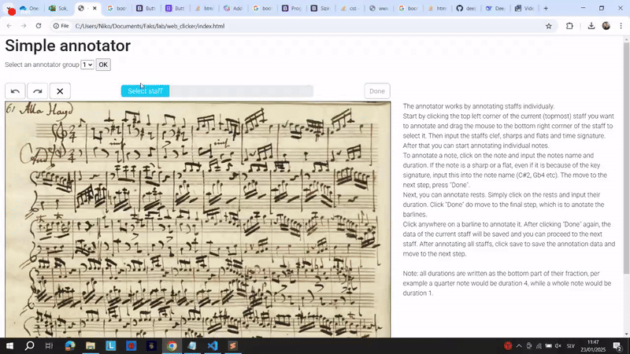
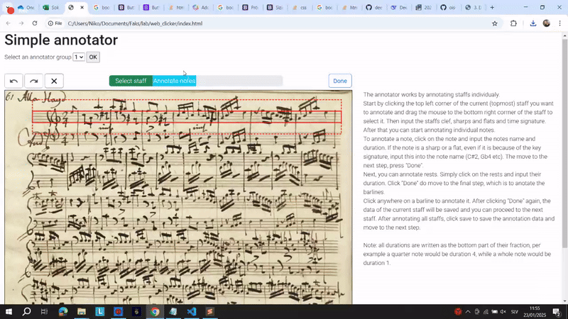
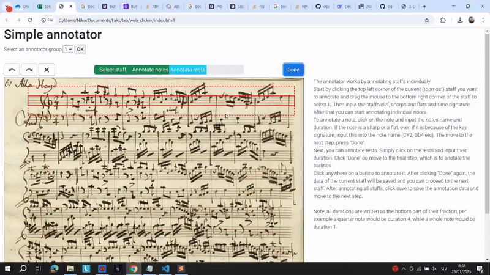
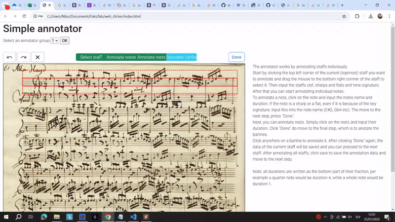

Annotation is the main part of the annotator. Click on the sections bellow to get help on how to use the annotator and the specific stages of annotation.
Annotating the staff is the first part of the annotation process. To select a staff, simply click on its top left corner, and drag the mouse to its bottom right corrner. If you are not satisfied with the staff selection, you can click "cancel" in the popup window to select the staff again. After that input the staff specifics into the provided window. Input the cleff, time (if available) and sharps and flats of the staff (if any). If there is no time or sharps and flats on the current staff, because they were specified on the first staff you do not need to input them again. Lastly, click "Ok" to move to the next step of annotation.

Anotating notes follows the staff annotation. Simply click on note heads to annotate them. In the popup window you must enter the tone and the duration of the note. A tone suggestion is already preapared, but will sometimes need to be changed. Tones can also be changed by using the arrow keys (up increases the tone by hald a note, down decreases the tone by hald a note). Add any charps and flats to the note name (Per example C#4 or Db3). The note diration is written as the bottom part of the note fraction. Per example a quarter note would have duration 4, an eight note would have duration 8. After annotating all the notes in the staff click "Done" to move to the next stage.

To annotate rests click on them and input their length. The length is written as the bottom part of the rest fraction. Per example a quarter rest has duration 4, while an eight rest has duration 8.

To annotate barlines, simply click on them. After clicking on all the barlines, click "Done" to finish annotating the current staff and move on to the next, or if you annotated all the staffs, save the annotation and move to the next page.
